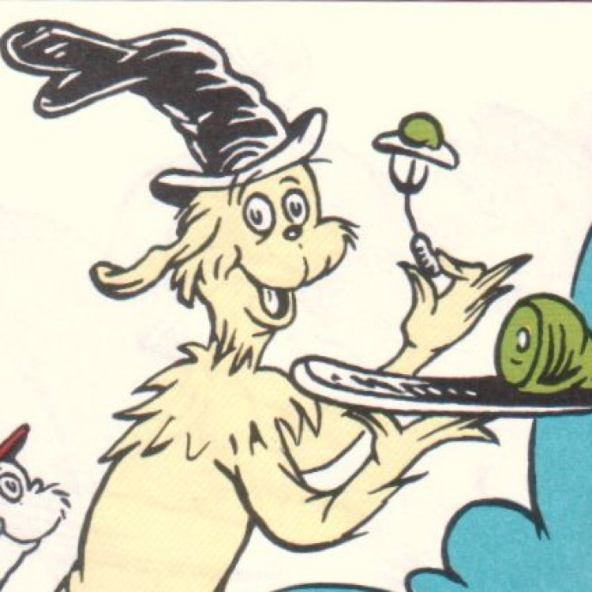

COOKIE BUTTER: A PERSONAL HISTORY
In my defense I have never been an eat-the-raw-cookie-dough type. I think chocolate chip cookie dough ice cream was the darkest period in human dessert fad history. This may have tainted my expectations.
-
Ca. 2009: I read an online post extolling the virtues of Trader Joe's "Cookie Butter"
Me: Gross
-
Ca. 2011: I read a blog article about the best Trader Joe's hidden gems and cookie butter is high on the list.
Me: Eww
-
Ca. 2013: Various people I know and love begin praising cookie butter in that slavish way—you know kind of like OMG FROZEN YOGURT in the 80s
Me: Blech
-
Early 2015: A person I trust says cookie butter is delicious.
Me: I trust this person less now.
-

August 11, 2015: A friend gives my wife a jar of cookie butter in a little birthday gift basket.
Me: Fine. [see figure 1]